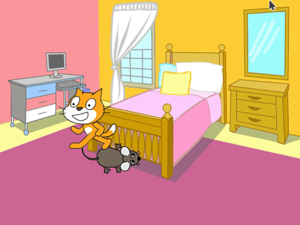
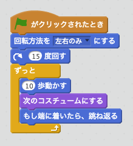
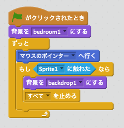

日程： 2016/7/9 (土) 9:30-11:30
参加者： 子供13名（小３〜小６）、保護者(4名)
課題： Scratchを使って「猫から逃げろ！」と言うゲームの作成

準備として、パソコンを無線LANに繋いで、Scratchのアカウントを作成した。
ゲームの基盤となる猫の動きを、少しずつ作った。
これで猫の動き完成。次に、プレイヤーが制御するネズミをゲームに追加した。
最後に、ゲームが終わったことを知らせるために、背景を変えてみた。
これで「猫から逃げろ！」ゲーム完成！
これまではScratchを触ったことがない人も含めて全員作れた。おめでとうございます！
また、このゲームを改善した友達は沢山いた。例えば、背景を変えたり、猫を恐竜に変えたり、 ネズミをライオンに変えたりして工夫した人。
さらに、ゲームの動きも変えてみる人もいた。例えば、ネズミを魚に変身させ、 猫が常に魚に向くようにした。あるいは、猫の動きをランダムにし、 予測できない動きをするようにした人もいた。
それ以外にも様々なアイディアを実現できた。
プログラミングは自分の思い通りにコンピューターを動かすことだ。
たった２時間でプログラミングの可能性を皆で実感できたのではないかと思います。
今後もプログラミングの可能性を少しずつ探っていき、皆で楽しんでいきましょう。